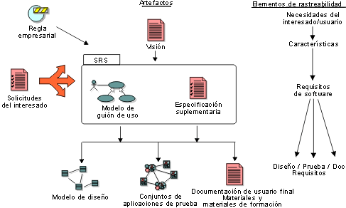

| Concepto: Tipos de requisitos |
 |
|
| Elementos relacionados |
|---|
|
Tradicionalmente, los requisitos se consideran sentencias de texto que encajan en una de las categorías mencionadas en Concepto: Requisitos. Cada requisito declara "una condición o capacidad que debe cumplir el sistema". Para realizar una Gestión de requisitos eficaz, sabemos que es útil ampliar los requisitos más allá de simplemente los "requisitos de software" detallados. Hemos introducido la noción de tipos de requisitos para ayudarle a separar los diferentes niveles de abstracción y los objetivos de nuestros requisitos. 
Es recomendable realizar un seguimiento de los "deseos" ambiguos, así como de las solicitudes formales, de los interesados
para asegurarnos de que conocemos su estado. El documento Visión le
ayuda a realizar un seguimiento de las "necesidades del usuario" clave y las "características" del sistema. El modelo de caso de uso es una manera eficaz de expresar los
"requisitos de software" funcionales detallados; por lo tanto, los casos de
uso deben rastrearse y mantenerse como requisitos, así como las sentencias individuales de las propiedades del caso
de uso que declaran las "condiciones o capacidades que debe cumplir el sistema". Las especificaciones suplementarias pueden contener otros "requisitos de
software", como restricciones de diseño o requisitos legales o reguladores del sistema. Para obtener una definición
completa de los requisitos de software, los casos de
uso y las especificaciones suplementarias pueden empaquetarse juntos para
definir una Especificación de requisitos de software (SRS) para una
"característica" particular u otra agrupación de subsistemas. Más informaciónPuede encontrar más información sobre este tema en:
Concepto: Requisitos |
© Copyright IBM Corp. 1987, 2006. Reservados todos los derechos. |